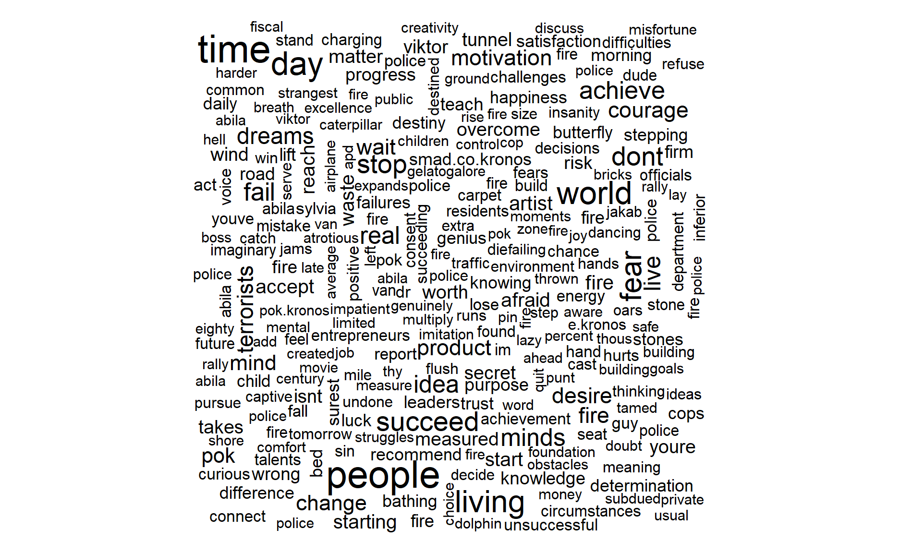
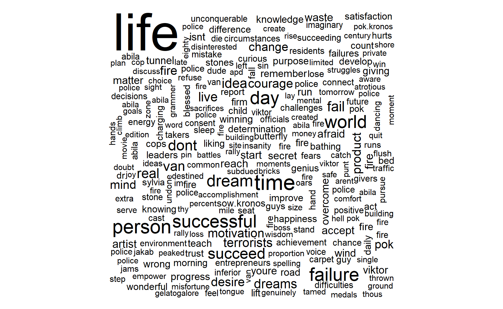

Mini-Challenge 3
The write-up below attempts to solve Mini-Challenge 3 from the VAST Challenge 2021. The scenarios presented and all the people, places, groups, technologies, contained therein are fictitious. Any resemblance to real people, places, groups, or technologies is purely coincidental.
On the island country of Kronos, a company known as GAStech have been operating a natural gas production facility for the last 20 years. It has produced remarkable profits and developed strong relations with the government of Kronos, albeit not as successful in demonstrating environmental stewardship. In January 2014, the leaders of GAStech are celebrating their new-found fortune because of the initial public offering of their very successful company. Amid this celebration, several employees of GAStech go missing. An organization known as the Protectors of Kronos (POK) is suspected in the disappearance. On the night of January 23, 2014, multiple events took place in the fictional city of Abila, capital of Kronos. As an analyst your job is to perform a retrospective analysis based on limited information about what took place.
The information comes from a single data stream containing two sources:
Rows: 4,063
Columns: 8
$ source <int> 1, 1, 1, 1, 1, 1, 1, 1, 1, 1, 1, 1, 1~
$ type <chr> "mbdata", "mbdata", "mbdata", "mbdata~
$ `date(yyyyMMddHHmmss)` <dbl> 2.014012e+13, 2.014012e+13, 2.014012e~
$ author <chr> "POK", "maha_Homeland", "Viktor-E", "~
$ message <chr> "Follow us @POK-Kronos", "Don't miss ~
$ latitude <dbl> NA, NA, NA, NA, NA, NA, NA, NA, NA, N~
$ longitude <dbl> NA, NA, NA, NA, NA, NA, NA, NA, NA, N~
$ location <chr> NA, NA, NA, NA, NA, NA, NA, NA, NA, "~Rows: 4,063
Columns: 12
$ source <int> 1, 1, 1, 1, 1, 1, 1, 1, 1, 1, 1, 1, 1~
$ type <chr> "mbdata", "mbdata", "mbdata", "mbdata~
$ `date(yyyyMMddHHmmss)` <dbl> 2.014012e+13, 2.014012e+13, 2.014012e~
$ author <chr> "POK", "maha_Homeland", "Viktor-E", "~
$ message <chr> "Follow us @POK-Kronos", "Don't miss ~
$ latitude <dbl> NA, NA, NA, NA, NA, NA, NA, NA, NA, N~
$ longitude <dbl> NA, NA, NA, NA, NA, NA, NA, NA, NA, N~
$ location <chr> NA, NA, NA, NA, NA, NA, NA, NA, NA, "~
$ timestamp <time> 17:00:00, 17:00:00, 17:00:00, 17:00:~
$ date <date> 2014-01-23, 2014-01-23, 2014-01-23, ~
$ datetime <dttm> 2014-01-23 17:00:00, 2014-01-23 17:0~
$ time_block <fct> 2014-01-23 17:00:00, 2014-01-23 17:00~Messages by Author #############################################

Words by Timeblock #############################################
Words by Author #############################################

Retweet Network #############################################
function (x, ...)
{
UseMethod("ungroup")
}
<bytecode: 0x00000000259fc830>
<environment: namespace:dplyr>Hastags #####################################
Mentions #####################################